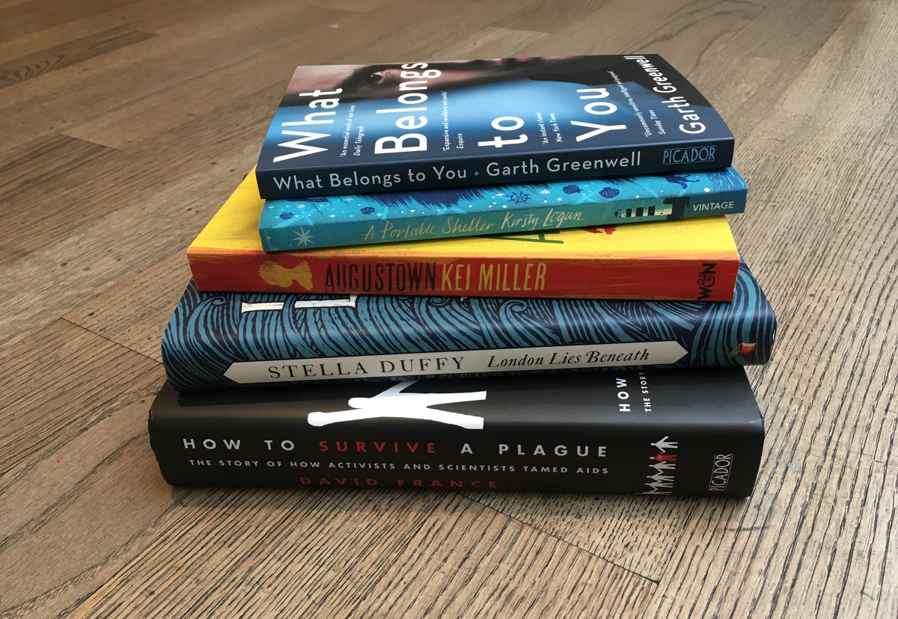

The Green Carnation Prize today announces the 2016 shortlist featuring: queer magical realism from Kirsty Logan; Stella Duffy’s story set in the South London slums of 1912; an insider account of the AIDS epidemic by David France; a debut novel exploring loneliness and isolation from Garth Greenwell; and Kei Miller’s story of racism and inequality in Jamaica. Two of the five titles are published by Pan Macmillan’s imprint, Picador.
The five shortlisted writers, though at various stages in their careers – from Greenwell’s first novel to Duffy’s 73rd writing credit – already have a broad range of acclaim, including: Logan’s second appearance on the Green Carnation shortlist; Duffy’s OBE for contribution to the arts; Academy Award and double Emmy nominee France; trained Opera singer Greenwell’s debut novel has been nominated for eight literary prizes; and Kei Miller was the winner of the 2014 Forward Prize.
Chair of judges and internationally acclaimed author John Boyne said: ‘These five books combine great storytelling with poetic language and authentic voices. Individually, each one has the power to move the reader while collectively they display the extraordinary diversity at play within the literary work of the LGBTQ community. It’s been difficult to narrow all the books down to five; it will be even harder to choose a winner.”

The Green Carnation Prize 2016 shortlist in full (in alphabetical order by author):
- London Lies Beneath, Stella Duffy (Virago)
- How to Survive a Plague, David France (Picador)
- What Belongs to You, Garth Greenwell (Picador)
- A Portable Shelter, Kirsty Logan (Random House)
- Augustown, Kei Miller (Weidenfeld & Nicolson)
Now in its seventh year, the Prize, with the support of Foyles, seeks to champion the best writing by an LGBTQ author in the UK. It is a vital recognition and celebration for books as diverse as the community it represents and unified by a common thread: sheer quality of writing.
Simon Savidge, Director of the Prize, said: ‘I am thrilled that this years judges have come up with such an incredible and diverse shortlist which shows the breadth that LGBTQ writing is covers in styles, settings and scope.’
Simon Heafield, Head of Marketing at Foyles, said: ‘The judges have selected an inspirational shortlist, each different but notable for the exceptional quality of writing. Foyles is hugely proud to partner with the Green Carnation to champion writing by the diverse and flourishing LGBTQ community in the UK.’
Following 2015’s highest number of submissions to date, the Prize was awarded to Marlon James’ A Brief History of Seven Killings. Upon winning the prize, James said: “Six years ago I wouldn’t have been able to voice that I was LGBT, so to be recognised for that and for work the judges felt was great is fantastic.”
The winner will be revealed at a ceremony at Foyles’ flagship bookshop 22nd May 2017.